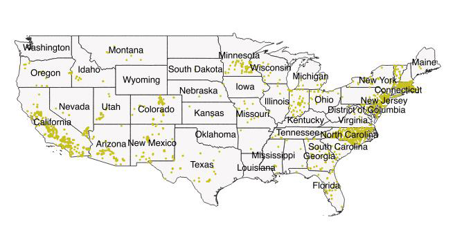

Mapping how the United States generates its electricity
See the origial articl here at The Washington Post
When you have all of them, it's ugly like this:
but when you make separate the layers:
Texts are all from The Washington Post
Coal
There are 400 coal-powered electric plants in the United States. They generated 30 percent of the nation's electricity last year.
Coal was the chief source of electrical generation in 19 states and the second most common source in another nine. Coal is most popular in the East, south of New York. Coal still accounted for at least 50 percent of generation in 13 states.
Natural Gas
There are 1,793 natural gas-powered electricity plants in the United States. They generated 34 percent of the nation's electricity last year.
Advances and expansion of fracking in the past decade have unlocked vast supplies of natural gas from shale deposits all over the country. The fuel is the primary source of electricity generation in 19 states and provides at least 50 percent of the electricity in nine states.
Nuclear
There are 61 nuclear electric plants in the United States. They generated 20 percent of the nation’s electricity last year.
New nuclear plants are coming online following decades of pause after an initial push in the 1970s and 1980s driven by the first oil shock. Maryland joined South Carolina, Illinois, Pennsylvania, Connecticut and New Hampshire in getting a plurality of its power from nuclear last year. Twenty states have no nuclear electricity generation at all.
Hydro
There are 1,444 hydroelectric plants in the United States. They generated 7 percent of the nation’s electricity last year.
It’s a feast-or-famine source. Washington, Oregon, Vermont and Idaho lead the nation in power from hydroelectric plants, getting between 56 percent and 68 percent of their electricity from them. But Montana and South Dakota were the only other states where they were responsible for more than 5 percent of electricity. Government-run plants generate most of the power.
Wind
There are 999 wind-powered electric plants in the United States. They generated 6 percent of the nation’s electricity last year.
Wind is the fastest-growing power source, finding a home in the Great Plains, where wind blows reliably across wide open spaces. Iowa got more than one-third of its power from wind, followed by Kansas, Oklahoma and South Dakota, which each got more than a quarter of their electricity from windmills. Wind is not the leading source of electric power anywhere but ranks second in seven states.
Solar
There are 1,721 solar-powered electric plants in the United States. They generated 1 percent of the nation’s electricity last year.
Solar power is predominantly used in the Southwest, where the sun shines the most. The growth of solar has created plants in all but eight states. California gets almost 10 percent of its electricity from solar, and Nevada gets more than 6 percent. Vermont and Arizona follow with 4 percent each.

Mapping how the United States generates its electricity
Read Why Outer Suburbs in the East and Midwest Have Stopped Booming The New York Times
Where deaths outnumbered births in 2011
Where deaths outnumbered births in 2012
Where deaths outnumbered births in 2013
Where deaths outnumbered births in 2014
Where deaths outnumbered births in 2015